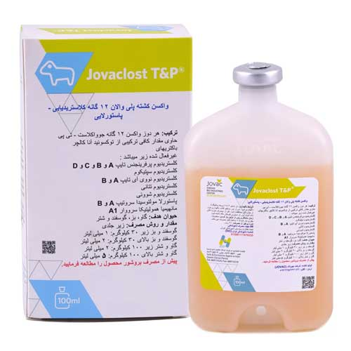

واكسن کشته پلی والان علیه بیماری های کلاستریدیایی و پاستورلایی، کمپانی JOVAC اردن
📝ترکیب:
هر دوزواکسن حاوی:
Sufficient amount of toxoid and anacultures to obtain at least:
Clostridium perfringens(types A,B,C and D):≥0.3 IU of α antitoxin per ml
of rabbit serum, ≥10 IU of β antitoxin per ml of rabbit serum and ≥ 5
IU of e antitoxin per ml of rabbit serum.
Clostridium septicum:≥2.5 IU of α antitoxin per ml of rabbit serum
Clostridium novyi(type A and B):≥ 3.5 IU of α antitoxin per ml of rabbit serum
Clostridium tetani: ≥ 2.5 IU of tetanus antitoxin per ml of rabbit serum
Clostridium chauvoei: ≥ 90% protection in guinea-pigs
Pasteurella multocida serovars A and B, Mannheimia haemolytica serovar A1 before inactivation:
7x 109 CFU viable organism
📝موارد مصرف:
واکسیناسیون نشخوارکنندگان در برابر بیماری های انتروتوکسمی، کزاز، استراک، قانقاریای نفخی bighead، بیماری سیاه، براکسی (ادم بدخیم)، شاربن علامتی و عفونت ریه پاستورلایی
📝دوز و روش مصرف:
واکسیناسیون بایستی به روش زیرجلدی (ترجیحا در ناحیه آرنج برای گوسفند و بز و در ناحیه زیر پوست جلوی شانه ها در گاو و شتر) به روش زیر انجام شود:
گوسفند و بز زیر 30 کیلوگرم: 1 میلی لیتر .
گوسفند و بز بالای 30 کیلوگرم: 2 میلی لیتر .
گاو و شتر زیر 100 کیلوگرم: 2 میلی لیتر .
گاو و شتر بالای 100 کیلوگرم: 5 میلی لیتر .
◻️ واکسیناسیون حیوانات بالغ:
اولین واکسیناسیون در هر سنی می تواند باشد. دوز یادآور بایستی 4 تا 6 هفته پس از اولین واکسن تکرار شود.
دومین واکسیناسیون: یک دوز به صورت سالانه، 6-2 هفته قبل از زایمان برای اطمینان از بالا بودن سطح ایمنی پیشنهاد می شود.
◻️ واکسیناسیون حیوانات تازه متولد شده:
در گوسفند و بز:
حیوانات متولد شده از مادران غیر واکسینه: دو تزریق، اولین تزریق در حدود ده روزگی و دومین تزریق 4-3 هفته بعد از اولین تزریق.
حیوانات متولد شده از مادران واکسینه: دو تزریق، اولین تزریق در سن 8-7 هفتگی و دومین تزریق 4-3 هفته بعد از اولین تزریق.
◻️ در گاو و شتر:
واکسیناسیون دو بار به فاصله 4 هفته در یک ماهگی انجام می شود.
📝موارد منع مصرف:
به حیوانات بیمار یا تحت استرس نباید واكسن تجویز شود.
🔹 توجه:
قبل از مصرف بطری را بخوبی تکان دهید.
روند ضد عفونی کردن متداول را انجام دهید.
در صورت بروز واکنش های ازدیاد حساسیت و یا در صورت تزریق واکسن با دوز بیشتر از میزان توصیه شده، اپی نفرین بایستی تزریق شود و از دامپزشک کمک گرفته شود.
محتویات بطری باز شده تا 10-8 ساعت قابل مصرف می باشد.
📝زمان پرهیز از مصرف:
21 روز
📝 شرایط نگهداری:
این واكسن باید در دمای 2 تا 8 درجه سانتی گراد و بدور از نور آفتاب نگهداری شود و از یخ زدگی محافظت شود.
📝عمر قفسه ای:
دو سال
📝بسته بندی:
بطری های 50، 100، 250 و 500 میلی لیتری
📝ساخت:
کمپانی Jordan Bio-Industries Center (JOVAC) اردن